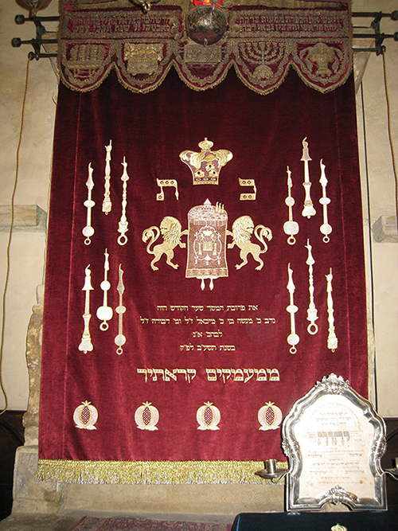

All this has come upon us...
Limited Edition Archival Prints Portfolio
Portfolio of 42 archival pigment prints of acrylic, gouache and colored pencil works on paper exhibited at the Terezin Ghetto Museum from April to July 2014. Includes folio with the titles, Hebrew psalms and descriptions of the all the artworks. Prints housed in an archival clamshell case imprinted with “ALL THIS HAS COME UPON US...” and the artist’s name. Edition limited to 60 numbered copies signed by the artist and ten copies hors commerce A to J.


Le Nozze di Figaro

Limited Edition Archival Print
Mark Podwal’s artwork shows the four protagonists of Mozart’s opera—each a captive of a heart-shaped music staff. The composer, portrayed as a cupid, shoots flowers at the characters. Evoking the opera's comic romance, the musical notes are represented as flowers. A backdrop of hearts further visualizes the storyline.Don Giovanni

Limited Edition Archival Print
Mark Podwal’s archival print depicts characters from Mozart’s Don Giovanni interacting with musical notations. A bass clef encircles the title hero while Leporello, his servant, points to a list of Giovanni’s conquests. A forte sign heralds the Commendatore, Donna Anna masquerades with a quarter note, and Zerlina gives her hand to an eighth note. Donna Elvira is imprisoned in a heart-shaped G clef. The background features musical excerpts from Mozart's autograph score of Don Giovanni.Così Fan Tutte
Limited Edition Archival Print
Mark Podwal's archival pigment print depicts the four leading characters of Mozart's beloved comedy, with the men, disguised as moustache-wearing "Albanians," wooing each other's sweetheart. The troop ship's flag and sails feature Mozart's signature and musical excerpts from the score.Nabucco
Limited Edition Archival Print
Verdi's Nabucco, based on the life of Nebuchadnezzar, the King of Babylon, was the inspiration for this original image. The artwork incorporates a winged Babylonian lion and broken Jewish ceremonial objects from various eras symbolizing the plight of the Jewish people throughout history.
My Synagogue is in Prague: Picturing Mark Podwal
House of Life: The Old Jewish Cemetery in Prague
Institute for Advanced Study Exhibit and Special Event: Mark Podwal
PBS: Mark Podwal Extended Interview
Mark Podwal's Mozart and Prague
Czech Television interview on Prague Old Jewish Cemetery documentary
Czech Television interview on Terezin exhibition documentary
Altneuschul - Prague, Czech Republic

Textiles - Prague Jewish Community
Mark Podwal's richly designed textiles for Prague's Altneuschul, the oldest and continually active synagogue in Europe, include a Torah ark cover, three Torah mantles and covers for the Torah reading and cantor’s desks. Built in 1270, the Altneuschul, or "Old-New Synagogue," is celebrated for its architectural beauty and legendary provenance–myth has it its stones were brought by angels. In collaboration with renowned New York textile embroiderers Penn & Fletcher, Podwal used modern technology to create vignettes of the centuries-old Prague Jewish Community.Temple Emanu-El - New York, New York
Ark Curtain and Torah mantles
The Emanu-El main sanctuary, seating 2,500, makes it one of the world’s largest Jewish houses of worship. In 1996, Mark Podwal designed an Aubusson tapestry for the main sanctuary's Torah ark. Each design for the five Torah mantles symbolizes one of the five books of Moses.Agudas Achim Synagogue – Brno, Czech Republic
Textiles
The Agudas Achim synagogue in Brno, built in the 1930s, is an example of modern functionalistic architecture. During World War II, the synagogue was used as a warehouse, which resulted in considerable damage. After the war, it was reconsecrated but the property had not gone through any major structural modifications and fell into disrepair. In 2014 a major restoration project’s objective was to return the interior to its original condition. The renewed synagogue will serve not only its religious purposes - it will be open for the general public as well. Cultural events, concerts, exhibitions and educational workshops will focus on the regional Jewish legacy. Mark Podwal was commissioned to design all of the synagogue’s new textiles.Rhinebeck Jewish Center

Ark curtain
Rhinebeck Jewish Center was constructed with recycled wood salvaged from an existing barn. Coupled with green technology, such as rainwater collection and passive heating and cooling, the new building, designed by Yeshaya Shor, is a green place of prayer. Mark Podwal’s parochet design features a menorah surrounded by the twenty-two letters of the Hebrew alphabet. Generally, the menorah’s branches are depicted as semi-circular. Nevertheless, Rashi in his commentary to the Torah, explicitly writes that the branches “extended upward in a diagonal.” The very Hebrew word, which the Torah uses to describe the branches, ohbe, implies a straight line.Congregation Agudas Achim - Austin, Texas


Torah Ark Exterior Door Decoration
Mark Podwal's Hebrew Zodiac is etched in copper on the exterior of the ark doors. The art is based on the following Talmudic verse: "He who sees the sun in its seasons, the moon in its fullness, the stars in their orbit, the planets in their fixed order, will say 'Blessed be the Creator of the Universe.'" Zodiac signs appeared frequently in early Jewish art particularly in synagogue floor mosaics. The balancing scale of Libra coincides with the month of Tishrei, the time of divine judgment. Taurus was linked to the calf slaughtered by Abraham for his three angelic guests while Gemini is said to represent Jacob and Esau. The twelve Zodiac signs were also said to correspond to the twelve tribes of Israel.Torah Ark Interior Door Decoration
"All that which I created, I created in pairs: Heaven and Earth a pair, the sun and moon a pair, Adam and Eve a pair" (Song of Songs Rabbah). Inspired by this verse, depicted are the sun and moon, a pair of rimmonim, a pair of tefillin, a pair of hands configuring the priestly blessing, a pair of challot, and the two tablets of the Ten Commandments protected by a pair of lions.Ark Curtain
The parochet, the curtain in front of the Torah ark, is adorned with a painting of a Tree of Life with the Torah scrolls as the trunk. The Kabbalistic tree diagram portraying the ten sefirot or attributes of G-d appears among the leaves.Torah Mantles
The images on the seven Torah mantles each represent a Jewish festival or Day of Remembrance. The mantle design for a Torah saved from the Holocaust is an upside down menorah formed by railroad tracks alongside a yellow Star of David.Medal for Echo Foundation
The Echo Foundation commissioned Mark Podwal to design the “Sandra and Leon Levine Medal for Life.” Inspiration for the medal’s design came from the Levines’ philanthropic activities and their Jewish heritage. The front of the medal evokes an ancient Israeli coin, featuring a lyre and the biblical verse Psalm 89:3 in Paleo-Hebrew. The name of the medal, “Sandra and Leon Levine Medal for Life,” arcs halfway around the coin. The reverse side is inscribed with the same verse, which reads, “The world is built upon loving kindness,” in both Paleo-Hebrew and English.